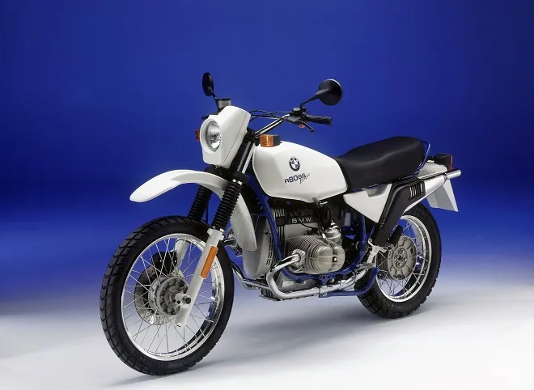

- Typ silnika: Bokser dwucylindrowy.
- Pojemność: 797 ccm.
- Moc: 50.00 KM (36.5 kW)) przy 6500 RPM.
- Moment obr.: 59.82 Nm przy 3750 RPM.
- Skrzynia biegów: 5 biegowa.
BMW R 80 to motocykl szosowy klasy naked bike produkowany przez niemiecki koncern od 1981 roku. Charakterystyczny silnik typu bokser, dopracowana i trwała konstrukcja oraz dobre właściwości jezdne, dzięki którym z każdego kilometra można czerpać maksimum radości - oto cechy modelu R 80, za które motocykliści z całego świata polubili ten jednoślad. BMW R 80 zostało wyposażone w dwucylindrową jednostkę napędową typu bokser o pojemności skokowej 797 ccm. Chłodzony powietrzem silnik czterosuwowy cechuje się rozrządem SOHC (dwa zawory na cylinder sterowane przez jeden wałek rozrządu), gaźnikowym układem zasilania marki Bing i elektrycznym rozrusznikiem. Serce modelu R 80 generuje moc maksymalną 50 KM przy 6500 obr./min i maksymalny moment obrotowy 58 Nm przy 5500 obr./min, co pozwala na dość dynamiczne przyspieszenia i jazdę z prędkością maksymalną ponad 180 km/h. Na pokładzie BMW R 80 znajdziemy zbiornik paliwa o pojemności 22 litrów, co przy średnim zużyciu paliwa na poziomie 5,9 l/100 kilometrów zapewnia zasięg prawie 400 kilometrów na jednym tankowaniu. Ze wszystkimi płynami motocykl waży 210 kilogramów.